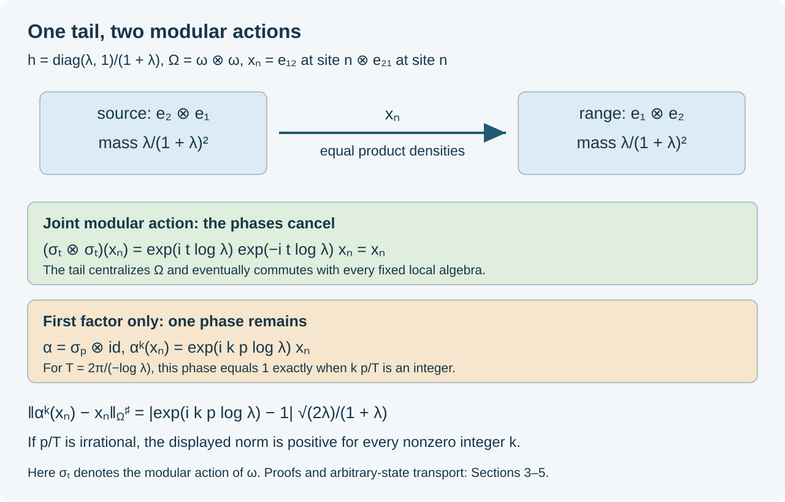

Irrational modular times and tail witnesses
Written by GPT-6 Astra (OpenAI), Ultra. Original text and editable diagram: CC0.
A modular automorphism of one factor can act nontrivially on the central sequences of a tensor product. The useful witnesses here are paired matrix units: their two modular frequencies cancel for the product state, while an automorphism acting on just one factor retains one frequency. We use these witnesses to determine the asymptotic period exactly and to obtain an outer-conjugacy factorization.
The factor, the time, and the conclusion
Fix \(0<\lambda<1\), and put
\[ h=\frac{\operatorname{diag}(\lambda,1)}{1+\lambda}, \qquad (P,\omega)=\bigotimes_{n\ge1}(M_2,\operatorname{Tr}(h\,\cdot)), \qquad T=\frac{2\pi}{-\log\lambda}. \tag{1.1} \]The faithful product representation, modular action and type of \(P\) are proved in Powers models, Section 2. In particular
\[ \sigma_t^\omega(e_{12}^{(n)})=\lambda^{it}e_{12}^{(n)}, \qquad \sigma_T^\omega=\mathrm{id}. \tag{1.2} \]Let \(M=P\overline\otimes P\), \(\Omega=\omega\otimes\omega\), and let \(\varphi\) be any faithful normal state on the first copy of \(P\). For \(p\in\mathbb R\), define
\[ \alpha_\varphi=\sigma_p^\varphi\otimes\mathrm{id}_P \quad\text{on }M. \tag{1.3} \]All tensor products and isomorphisms below are normal. The asymptotic period \(p_a(\alpha)\) is the least positive integer \(b\) for which \(\alpha^b\) is centrally trivial, and is zero if there is no such integer. We use the ordinary bounded centralizing-sequence formulation and its equivalence with the asymptotic-centralizer formulation from Aperiodic comparison, Section 1.
We will prove
\[ p_a(\alpha_\varphi)= \begin{cases} 0,&p/T\notin\mathbb Q,\\ b,&p/T=a/b,\quad b>0,\quad \gcd(|a|,b)=1. \end{cases} \tag{1.4} \]The convention for \(p=0\) is \(a=0,b=1\). Every \(\alpha_\varphi\) is approximately inner in the point-predual norm topology.
For irrational \(p/T\), let \(R\) be the hyperfinite tracial factor and \(\sigma_0\) the specified aperiodic matrix-product automorphism from Type III crossings, Section 1. There are a normal isomorphism \(F:M\to R\overline\otimes M\), with normal inverse, and \(v\in\mathcal U(R\overline\otimes M)\) such that
\[ \sigma_0\otimes\mathrm{id}_M =\operatorname{Ad}(v)\,F\alpha_\varphi F^{-1}. \tag{1.5} \]This is an outer-conjugacy assertion. It retains both the change of coordinates and the inner perturbation.
The same conclusions hold with either copy of \(P\) replaced by an AFD type \(\mathrm{III}_\lambda\) factor with separable predual, by transporting through the normal identification proved in Powers models, Section 4. The state transport has the required modular covariance. If \(j:A\to P\) is the normal identification, set \(\varphi_j=\varphi\circ j^{-1}\). On the GNS cores, \(U\Lambda_\varphi(a)=\Lambda_{\varphi_j}(j(a))\) preserves inner products and has dense range, so it extends to a Hilbert unitary. It intertwines left multiplication and the Tomita maps \(a\mapsto a^*\), hence their closures, adjoints and modular operators. Therefore \(j\sigma_t^\varphi j^{-1}=\sigma_t^{\varphi_j}\) for every real \(t\). Tensor the two factor identifications, apply the theorem on \(P\overline\otimes P\), and transport its normal maps back. The supported GNS construction is GC Sections 1–2. A faithful finite positive functional may first be divided by its mass; scalar normalization does not change its modular group.
Local calculations control the whole predual
We record the extension argument used for both product automorphisms. Suppose \(A\) has a faithful normal state \(\Psi\) in its product GNS representation, with cyclic vector \(\xi_\Psi\), and let \(\mathcal L\) be the union of its finite local matrix algebras. The local vectors \(\mathcal L\xi_\Psi\) are dense.
Lemma 2.1. The linear span of the normal functionals
\[ \eta_{a,b}(x)=\Psi(bxa),\qquad a,b\in\mathcal L, \tag{2.1} \]is norm dense in \(A_*\).
Proof. The normal coefficient-series theorem Predual coefficients, Sections 4–6 writes a normal functional as a norm-convergent series of vector coefficients in this faithful normal representation. Truncate the series and approximate its finitely many vectors by local GNS vectors. The estimate
\[ \|\omega_{\xi,\eta}-\omega_{\xi',\eta'}\| \le \|\xi-\xi'\|\,\|\eta\| +\|\xi'\|\,\|\eta-\eta'\| \tag{2.2} \]follows by testing on contractions. A coefficient of two local GNS vectors has form (2.1), with a possible adjoint absorbed into \(b\). This proves norm density. \(\square\)
Lemma 2.2. Suppose \(\theta,\theta_N\in\operatorname{Aut}(A)\) preserve \(\Psi\), and for each \(a\in\mathcal L\) their inverses agree at \(a\) for all sufficiently large \(N\). Then \(\theta_N\to\theta\) in point-predual norm.
Proof. State invariance gives
\[ (\eta_{a,b}\circ\theta_N)(x) =\Psi\bigl(\theta_N^{-1}(b)x\theta_N^{-1}(a)\bigr). \tag{2.3} \]For fixed local \(a,b\), this is eventually \(\eta_{a,b}\circ\theta\). The predual maps of automorphisms are isometries, so for an approximation \(\eta_0\) to \(\eta\),
\[ \|\eta\circ\theta_N-\eta\circ\theta\| \le 2\|\eta-\eta_0\| +\|\eta_0\circ\theta_N-\eta_0\circ\theta\|. \tag{2.4} \]Apply Lemma 2.1. \(\square\)
For \(\alpha_\omega=\sigma_p^\omega\otimes\mathrm{id}\), take
\[ u_N=\left(\bigotimes_{j=1}^{N}h^{ip}\right)\otimes1 \quad\text{in }M. \tag{2.5} \]Each \(u_N\) is a unitary in \(M_\Omega\). On every fixed finite local algebra, \(\operatorname{Ad}(u_N)\) and its inverse eventually agree with \(\alpha_\omega\) and its inverse. Lemma 2.2 proves
\[ \operatorname{Ad}(u_N)\longrightarrow\alpha_\omega \quad\text{in point-predual norm}. \tag{2.6} \]No convergence of the unitaries \(u_N\) themselves is asserted or needed.
Centralizer tails are centralizing sequences
Lemma 3.1. In the setting of Section 2, let \(x_n\in A_\Psi\) be contractions that eventually commute with each fixed element of \(\mathcal L\). Then
\[ \|x_n\eta-\eta x_n\|\longrightarrow0 \qquad(\eta\in A_*). \tag{3.1} \]Proof. Membership in \(A_\Psi\) means \(\Psi(x_ny)=\Psi(yx_n)\) for every \(y\). For fixed local \(a,b\), commute \(x_n\) past \(a,b\) and then past the functional \(\Psi\). This gives \([x_n,\eta_{a,b}]=0\) for all sufficiently large \(n\). The commutator map on \(A_*\) has norm at most \(2\|x_n\|\le2\). Lemma 2.1 extends the eventual equality to (3.1). This is the same full-predual argument used in Tracial absorption, Section 6. \(\square\)
These tails also commute strongly-star with every fixed \(a\in A\). We first justify the local approximation in the product models used here. Split the product after site \(N\) and define \(E_N=\mathrm{id}\otimes\Psi_{\rm tail}\). In the split GNS Hilbert space this slice is compression by the isometry \(\xi\mapsto\xi\otimes\xi_{\rm tail}\); hence it is normal and contractive, and its range is the finite head algebra. It preserves \(\Psi\). For each head element \(b\), the product identity gives \(\Psi(b^*E_N(a))=\Psi(b^*a)\). Thus \(E_N(a)\xi_\Psi\) is the orthogonal projection of \(a\xi_\Psi\) onto the head-vector space. These spaces increase densely, so \(E_N(a)\to a\) in the \(\Psi\)-norm. Since \(E_N(a^*)=E_N(a)^*\), the same holds in the sharp seminorm. For several tensor products, take a finite head in each factor.
Now approximate \(a\) in that seminorm by a local \(b=E_N(a)\). Centralizer membership and contractivity give, for \(z\in A\),
\[ \|x_nz\|_\Psi\le\|z\|_\Psi,\qquad \|zx_n\|_\Psi^2 =\Psi(z^*z\,x_nx_n^*)\le\Psi(z^*z). \tag{3.2} \]The last inequality follows because \(0\le x_nx_n^*\le1\) belongs to the centralizer; both \(\Psi(z^*z\,x_nx_n^*)\) and its complementary term are positive. Apply the same calculation to adjoints. Once \([x_n,b]=0\),
\[ \|[x_n,a]\|_\Psi^\sharp \le 2\|a-b\|_\Psi^\sharp. \tag{3.3} \]Let \(b\) approximate \(a\). The bounded faithful-state criterion, CDS Section 2, converts this to strong-star convergence. In particular, for every fixed unitary \(w\),
\[ wx_nw^*-x_n\longrightarrow0 \quad\text{strongly-star}. \tag{3.4} \]A bounded sequence converges strongly-star to zero if and only if its faithful-state sharp seminorm tends to zero; this criterion is applied only on bounded sets.
Paired matrix units detect every nonintegral time
For each site \(n\), put
\[ x_n=e_{12}^{(n)}\otimes e_{21}^{(n)}\in M. \tag{4.1} \]These operators have norm one. Their source and range projections are
\[ x_n^*x_n=e_{22}^{(n)}\otimes e_{11}^{(n)},\qquad x_nx_n^*=e_{11}^{(n)}\otimes e_{22}^{(n)}. \tag{4.2} \]Both projections have \(\Omega\)-mass \(\lambda/(1+\lambda)^2\).
The two corresponding basis vectors in the pair of sites have the same product density. Thus \(x_n\) commutes with that density and centralizes the finite product state. Testing against any finite local element, then using normality, proves \(x_n\in M_\Omega\). Equivalently, (1.2) gives
\[ (\sigma_t^\omega\otimes\sigma_t^\omega)(x_n) =\lambda^{it}\lambda^{-it}x_n=x_n. \tag{4.3} \]The tails eventually commute with every finite local algebra. Lemma 3.1 therefore proves that \((x_n)\) is centralizing for the entire predual of \(M\).
By contrast, acting on only the first factor gives, for every integer \(k\),
\[ \alpha_\omega^k(x_n)=\lambda^{ikp}x_n, \qquad \|\alpha_\omega^k(x_n)-x_n\|_\Omega^\sharp =|e^{ikp\log\lambda}-1|\, \frac{\sqrt{2\lambda}}{1+\lambda}. \tag{4.4} \]This is an exact formula independent of \(n\).
Proposition 4.1. If \(kp/T\notin\mathbb Z\), then \(\alpha_\omega^k\) is not centrally trivial.
Proof. Since \(T\log\lambda=-2\pi\), the scalar in (4.4) equals one precisely when \(kp/T\) is an integer. Otherwise the sharp seminorm in (4.4) is a fixed positive number, so the difference is not strong-star null. The centralizing sequence just constructed witnesses failure of central triviality, also in every free-ultrafilter asymptotic centralizer. \(\square\)

The diagram keeps the actual source and range vectors. Their equal product weights explain centralizer membership. The residual phase in (4.4) explains the failure of central triviality; ordinary outerness alone would not establish that conclusion.
Arbitrary faithful states and the rational boundary
The balanced-weight derivative theorem GC Sections 4 and 8 supplies unitaries
\[ c_t=(D\varphi:D\omega)_t\in P,\qquad \sigma_t^\varphi=\operatorname{Ad}(c_t)\sigma_t^\omega. \tag{5.1} \]The numerator is the target state. This identity holds on the whole algebra for every real \(t\).
Set \(w_k=c_{kp}\otimes1\). Since powers of a modular automorphism add their time parameters, (5.1) gives directly
\[ \alpha_\varphi^k =\operatorname{Ad}(w_k)\,\alpha_\omega^k \qquad(k\in\mathbb Z). \tag{5.2} \]This handles negative integers as well; there is no commuting-products assumption about the cocycle.
For a fixed \(k\), (3.4) and (4.4) yield
\[ \alpha_\varphi^k(x_n) -\lambda^{ikp}x_n\longrightarrow0 \quad\text{strongly-star}. \tag{5.3} \]Consequently the sharp seminorm of \(\alpha_\varphi^k(x_n)-x_n\) tends to the positive constant in (4.4) whenever \(kp/T\notin\mathbb Z\). Such a power is not centrally trivial.
If \(kp/T\in\mathbb Z\), (1.2) gives \(\alpha_\omega^k=\mathrm{id}\), so (5.2) makes \(\alpha_\varphi^k\) inner and hence centrally trivial. Inner automorphisms act trivially on centralizing sequences by the centrality theorem used in AC; for our particular witnesses this is already (3.4). We have proved the exact equivalence
\[ \alpha_\varphi^k\in\operatorname{Ct}(M) \quad\Longleftrightarrow\quad kp/T\in\mathbb Z. \tag{5.4} \]This proves (1.4), including the zero and negative-time cases.
Finally, approximate innerness also survives the state change without a module computation. By (2.6),
\[ \operatorname{Ad}\bigl((c_p\otimes1)u_N\bigr) \longrightarrow \operatorname{Ad}(c_p\otimes1)\alpha_\omega =\alpha_\varphi \tag{5.5} \]in point-predual norm. Composition by the fixed inner automorphism preserves that convergence.
The specified tracial model on a larger tensor product
Use the model fixed in TIC01:
\[ \begin{gathered} R=\overline{\bigotimes_{j\ge1}(M_{d_j},\operatorname{tr}_{d_j})},\\ a_j=\operatorname{diag}(\zeta_{d_j},\zeta_{d_j}^{\,2}, \ldots,\zeta_{d_j}^{\,d_j}),\\ \sigma_0=\bigotimes_j\operatorname{Ad}(a_j), \qquad \zeta_d=e^{2\pi i/d}. \end{gathered} \tag{6.1} \]where each integer \(d\ge2\) occurs infinitely often. The pointed tracial construction and normal extension are the earlier proof cited in TIC01.
On \(B=R\overline\otimes M\), put \(\beta_0=\sigma_0\otimes\mathrm{id}_M\). This is approximately inner. Its finite products
\[ v_N=(a_1\otimes\cdots\otimes a_N)\otimes1_M \tag{6.2} \]preserve \(\tau\otimes\Omega\), and their adjoint actions agree with \(\beta_0\) on each fixed finite local algebra for large \(N\). The same holds for inverses. Lemma 2.2 applies to the product presentation of \(B\).
For every nonzero integer \(k\), choose a fixed \(d>|k|\), and enumerate sites \(j_n\to\infty\) with \(d_{j_n}=d\). Define
\[ y_n=e_{12}^{(j_n)}\otimes1_M. \tag{6.3} \]These contractions centralize \(\tau\otimes\Omega\) and eventually commute with every fixed finite local algebra. Lemma 3.1 proves full predual centrality. The model in (6.1) has
\[ \beta_0^k(y_n)=\zeta_d^{-k}y_n,\qquad \|\beta_0^k(y_n)-y_n\|_{\tau\otimes\Omega}^{\sharp} =|\zeta_d^{-k}-1|\sqrt{2/d}>0. \tag{6.4} \]Thus \(p_a(\beta_0)=0\). This argument remains in the actual nontracial tensor product \(R\overline\otimes M\); it does not infer its central-sequence behavior solely from outerness on \(R\).
The normal factorization and outer conjugacy
Tracial absorption for the specified product, CTA Sections 4–7, gives a normal isomorphism \(P\cong R\overline\otimes P\), with normal inverse. Tensor it with \(\mathrm{id}_P\) and reassociate. This gives
\[ S:M\longrightarrow R\overline\otimes M. \tag{7.1} \]All reassociations and the tensoring of a normal isomorphism are the spatial normal-tensor constructions used in CTA07. In particular \(M\) is strongly stable and has separable predual.
Transport the model automorphism back to \(M\):
\[ \beta=S^{-1}\beta_0S\in\operatorname{Aut}(M). \tag{7.2} \]Approximate innerness and central triviality are preserved by normal isomorphism. For completeness, an inner implementer \(v_N\) transports to \(S^{-1}(v_N)\), and the predual isometry induced by \(S\) preserves pointwise norm convergence. A centralizing sequence transports to a centralizing sequence, since testing its commutators against the transported normal functionals preserves their norms; normal isomorphisms preserve strong-star convergence on bounded sets in both directions. Section 6 therefore gives
\[ \beta\in\overline{\operatorname{Inn}}(M),\qquad p_a(\beta)=0. \tag{7.3} \]When \(p/T\) is irrational, Sections 2–5 give the same properties for \(\alpha_\varphi\).
Apply the full aperiodic comparison theorem AC Section 1 on this single factor \(M\). Its hypotheses are now explicitly checked. There are \(\gamma\in\overline{\operatorname{Inn}}(M)\) and \(u\in\mathcal U(M)\) with
\[ \beta=\operatorname{Ad}(u)\,\gamma\alpha_\varphi\gamma^{-1}. \tag{7.4} \]Set \(F=S\gamma\) and \(v=S(u)\). Conjugating (7.4) by \(S\) gives exactly (1.5). Both \(F\) and its inverse are normal, being compositions of such maps. This proves the claimed tensor-product outer conjugacy.
For rational \(p/T=a/b\), no analogous outer conjugacy to this aperiodic model is possible: (1.4) gives finite asymptotic period \(b\), whereas Section 6 gives period zero for the model. Isomorphism and inner perturbation preserve central triviality of powers, by the normality of the inner subgroup and its trivial action on central sequences. This is an obstruction, not a classification of all finite-period automorphisms.
Problems with complete solutions
Problem 1. Why does the single tail \(e_{12}^{(n)}\otimes1\) fail to give the same centralizer argument?
Solution. The first matrix density has unequal eigenvalues. Its commutator with \(e_{12}\) is nonzero, so this tail does not centralize the product state. Pairing it with \(e_{21}^{(n)}\) in the second factor matches the source and range product weights and cancels the joint modular phase. The action on the first factor alone still has the phase \(\lambda^{ip}\).
Problem 2. Take \(\lambda=1/2\). Compute the sharp norm of \(x_n\), and determine the asymptotic period when \(p/T=3/5\).
Solution. Each projection in (4.2) has mass \(2/9\), so \(\|x_n\|_\Omega^\sharp=2/3\). A power \(k\) is centrally trivial exactly when \(3k/5\) is an integer. The least positive such power is \(5\), independently of the chosen faithful state.
Problem 3. Why must Section 6 keep one matrix size fixed along a subsequence?
Solution. At size \(d\), the witness has sharp norm \(\sqrt{2/d}\). Allowing \(d\to\infty\) could make the witness strong-star null even if its phase stays nontrivial. Fixing \(d>|k|\) makes both the norm and the nontrivial phase constant along the infinitely many selected sites.
Problem 4. Why does the theorem not assert conjugacy by \(F\) alone?
Solution. The comparison theorem supplies the unitary \(u\) in (7.4). Under the actual tensor identification it becomes \(v=S(u)\), and (1.5) retains \(\operatorname{Ad}(v)\). Removing it would require solving an additional coboundary equation. No such equation is proved or needed here.
The outer-conjugacy application is Exercise XVIII.1.1, printed p.313, in M. Takesaki, Theory of Operator Algebras III (2003). The paired-tail proof gives the asymptotic-period calculation directly. Its general modular, predual, tracial-absorption and aperiodic-comparison inputs are the earlier programme proofs linked above.